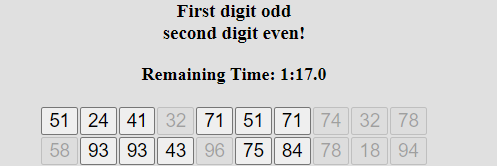

In the following test, you will see 100 numbers.
Your task is to to click as quickly as possible, but still correctly
on the numbers (with the left mouse button) one after the other
whose first digit is odd and whose second digit is even
(e.g. 16, 74, 52 etc.).
The test must be completed within the displayed time (2 minutes).
The remaining time can be seen above the number field. When the timer expires, the test continues automatically.
Example:
Below you can see an example from the first 20 numbers

The numbers marked here are correct.
You should only go through the numbers once quickly without jumping
back
and
answer as quickly as possible, but still correctly.
At the end, click on the "Confirm!" button immediately!
There will then be a second round, which you should complete
in the same way.
First, a test example with 16 numbers is performed.
There is no time restriction in the test example.